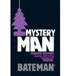
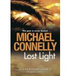
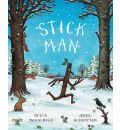
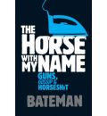
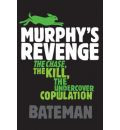
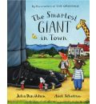
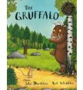
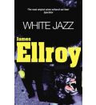
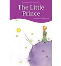
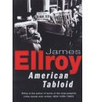

jquery.filterprojects demo (english version)
Un par de ejemplos de uso del plugin jquery.filterprojects. Para descargar la última versión date una vuelta por github.
Authors / Genres / Year
El uso por defecto muestra los hijos que contengan la intersección de los 3 grupos de filtro definido. La aparición y desaparición es aleatoria, aunque se puede definir tanto el pulso entre efectos y su duración.
$("#books").filterprojects({
filterTagSelector: [ '#author a', '#genre a', '#year a' ]
});
- 
- 
- 
- 
- 
- 
- 
- 
- 
- 
Filtro de posts por tema
Un uso más simple, con sólo un selector para filtrar y diciendo que la aparición y desaparición no sea aleatoria.
$("#posts").filterprojects({
animationSpeed: 1000,
animationPulse: 180,
randomize: false,
show: { height: 'show' },
hide: { height: 'hide' },
filterTagSelector: [ '#issues a' ]
});
- Por fin una técnica que permite bordes redondeados crossbrowser y eficiente! ahora a por la paz en el mundo.
- Un señor hace desaparecer un billete de 50 euros "y no me ha costado nada" ha declarado hace un momento
- Lo del colisionador de hadrones va para largo mientras tanto tomemos unos bocatas
- Curso sobre frontend el x del x en x seremos breves y sobre todo concretos
- Cañas con tapa por menos de un euro oh!
- "Arenal de Sevilla y ole! Torre del Oro" escalofriantes declaraciones
- y dijo "display:none" desde entonces no lo encuentro
- alert("hello world!") nunca fue un chico especialmente original